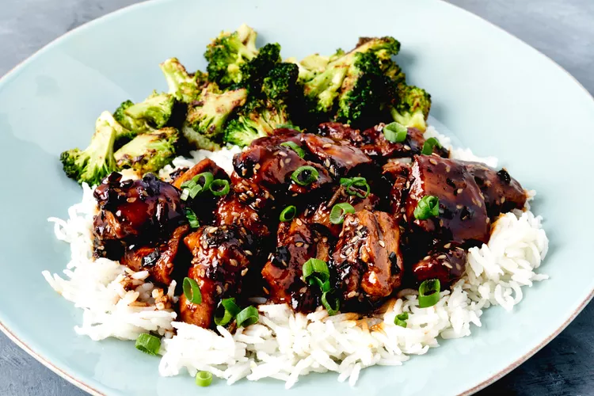

Chicken teryaki

This quick and easy recipe for homemade chicken teriyaki hits the spot. Serve over rice.
It's also brown and white.
And if you know what's best for you, you need to use this.

Ingredients:
- 1 cup soy sauce
- 1/4 cup sake
- 3 tbsp rice vinegar
- 1/3 cup brown siuugar
- 1 tbsp white sesame seeds
- 1/4 ts crushed red pepper
- 2 ts canola oil
- 1 ts toasted sesame oil
- 1 ts kosher salt
- 1/2 ts ground black pepper
- 2 pounds chicken thighs
- 2 ts ginger
- 1 ts minced garlic
- 1 bunch green onions
- 11/2 cups cooked rice
Directions:
- Combine soy sauce, sake, rice vinegar, and brown rice in a bowl and whisk well until sugar is dissolved.
Stir in sesame seeds and crushed red pepper and set aside.
- Heat oils in a large skillet over high heat.
Sprinkle salt and pepper evenly over chicken.
Add chicken in a single layer to the skillet and cook, undisturbed until chicken is browned and releases
easily from the pan, 4 to 6 minutes.
Flip chicken pieces, cook 1 more minute and remove from pan; set aside.
- Reduce heat to medium and add ginger and garlic.
Cook, stirring constantly, until fragrant, about 1 minute.
Reserve 2 tablespoon of the green onions for garnish and add remaining green onions to the skillet.
Cook for 1 minute. Add 1 cup reserved soy sauce mixture to the skillet and stir with a wooden spoon,
scraping up any browned bits from the bottom of the skillet.
Bring mixture to a boil and cook until sauce has reduced by about a third or until slightly thickened and glossy.
- Return chicken to the skillet and cook, stirring occasionally,
until sauce is thickened slightly and chicken is coated in the sauce and cooked through.
Serve over rice and sprinkled with reserved green onions.